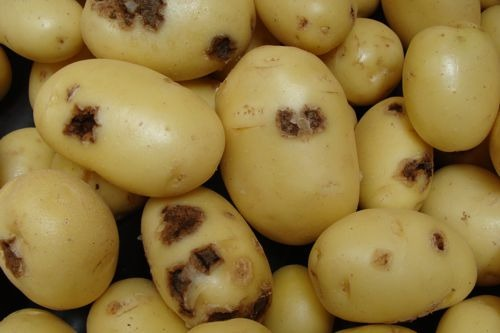
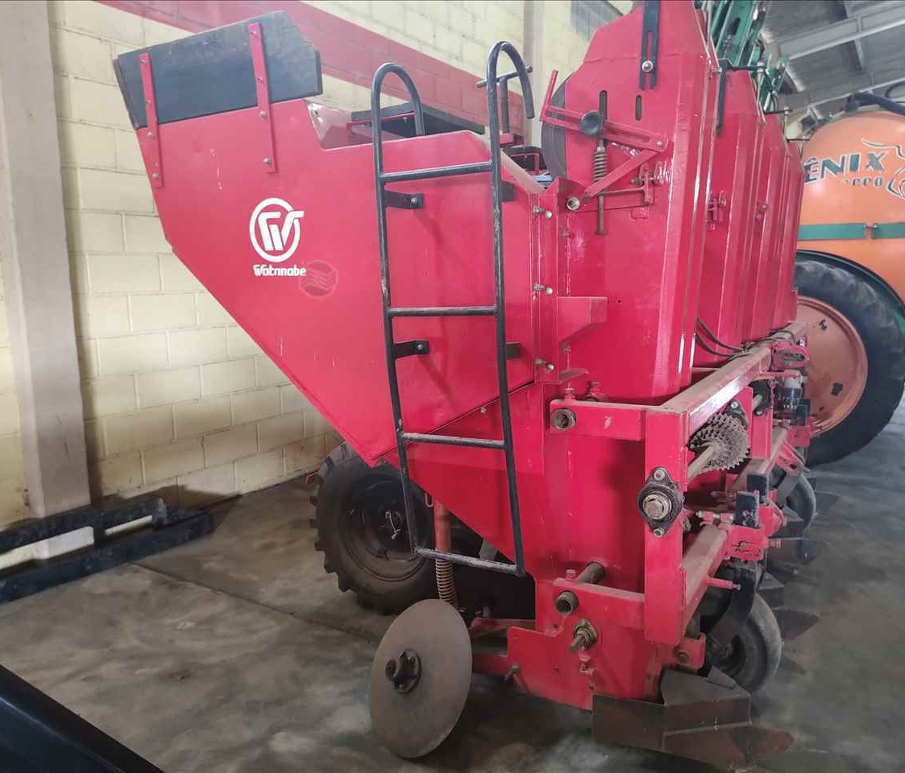

Plantio
O plantio de batatas é feito em linhas, com um espaçamento que permita o tráfego das máquinas durante os tratos culturais. A distância entre as plantas varia de 30 a 40 cm na produção de batata para consumo, e de 20 a 25 cm para o cultivo de batata-semente.
Já a profundidade de plantio depende das condições do solo. Quando argilosos, os tubérculos-semente normalmente são posicionados de 3 a 5 cm abaixo da superfície do solo. Nos solos de textura média ou arenosa, essa profundidade pode chegar a 10 cm.
Quanto aos sulcos de plantio, de maneira geral eles são feitos com um espaçamento de 75 cm, tanto para batata-consumo quanto para batata-semente. Com relação à densidade de tubérculos-semente utilizada, costuma variar de 15 a 20 caules por metro quadrado.
Confira, a seguir, os principais pontos do cultivo da batata:
• Irrigação
Quando falamos em irrigação da cultura de batata, a palavra-chave é equilíbrio. Isso porque os períodos de estiagem, mesmo que pequenos, podem comprometer o desempenho da lavoura, assim como o excesso de água também traz prejuízos.
Basicamente, a irrigação além do necessário reduz a aeração do solo e lixivia nutrientes, favorecendo a incidência de várias doenças. E o déficit de água diminui a produtividade da lavoura.
Nesse cenário, a demanda de água deve ser calculada levando em consideração as condições climáticas da área, o tipo de cultivar e o sistema de cultivo utilizado. De modo geral, o volume de irrigação varia de 250 a 550 mm, sendo que, quanto mais longo o ciclo de produção ou mais seca for a região da sua lavoura, maior será a demanda de água.
• Controle de pragas e doenças
Independentemente das características climáticas da sua região, para que a lavoura de batatas não sofra com a incidência de doenças e pragas, o ideal é trabalhar com o manejo integrado, que é vantajoso não somente pelo ponto de vista econômico, mas também para o meio ambiente, já que utiliza práticas sustentáveis.
Nesse modelo, o intuito é reduzir o desperdício de produtos, além do controle preventivo de doenças e do monitoramento de pragas. Outro exemplo é a rotação de culturas. Não é recomendado plantar mais de duas safras seguidas de batata na mesma área.
Em caso de surgimento dos primeiros sintomas de doenças ou vírus causadas por patógenos de solo, o ideal é arrancar as plantas infectadas e também as que estão localizadas próximo a elas, para evitar possíveis hospedeiros alternativos para pragas de cultivos anteriores.
Aqui estão mais alguns exemplos de controle preventivo de doenças e pragas na cultura da batata:
• plantio de batata-semente certificada;
• evitar o plantio em áreas onde a foram cultivados hortifrutis na última safra;
• preparar o solo com antecedência, a fim de expor os patógenos e pragas;
• controle do pH, pois pH acima de 6 favorece a ocorrência de doenças;
• adubar corretamente — a falta ou excesso de nutrientes favorece o desenvolvimento de doenças e deixa a planta vulnerável ao ataque de pragas;
• respeitar o espaçamento correto para cada cultivar, pois a falta de arejamento favorece o surgimento e intensifica a severidade das doenças.

• Colheita
O período de colheita da batata acontece entre três e quatro meses após o seu plantio. Lembrando que o processo deve ser iniciado a partir da secagem das ramas, seja naturalmente ou com a aplicação de insumos para essa finalidade, como herbicidas.
tecnologia
A tecnologia desempenha um papel fundamental na produção de batatas, trazendo uma série de benefícios que ajudam os agricultores a aumentar a eficiência, reduzir os custos e melhorar a qualidade das colheitas.
Aqui estão algumas maneiras pelas quais a tecnologia é importante na produção de batatas:
• Aumento da produtividade;
• Monitoramento e controle de pragas/doenças;
• Uso eficiente de recursos;
• Melhoria da qualidade e segurança alimentar;
• Sustentabilidade ambiental.
Em resumo, a tecnologia desempenha um papel crucial na produção de batatas, permitindo que os agricultores enfrentem os desafios do século XXI e produzam alimentos de forma mais eficiente, sustentável e lucrativa.
Na produção de batatas, várias máquinas desempenham papéis importantes para garantir eficiência e produtividade. Você pode comprar máquinas para auxiliar na produção de batata em lojas especializadas em equipamentos agrícolas, tanto físicas quanto online. Também é possível encontrar fornecedores através de feiras agrícolas ou buscando diretamente por fabricantes de equipamentos agrícolas em sua região.
Aqui estão algumas das máquinas comuns e suas funções na produção de batatas:
1.Plantadoras de batatas:
Estas máquinas são projetadas para plantar batatas de forma eficiente e uniforme no solo. Elas cortam sulcos, depositam as sementes de batata e cobrem-nas adequadamente para facilitar o crescimento.
.jpg)

.jpg)
.jpg)
.jpg)